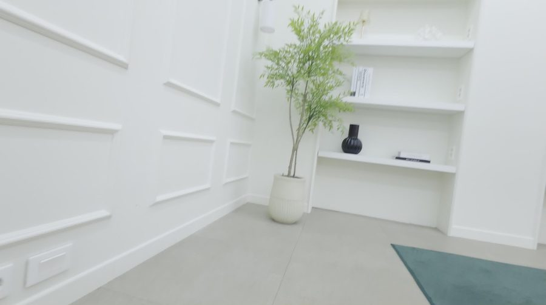
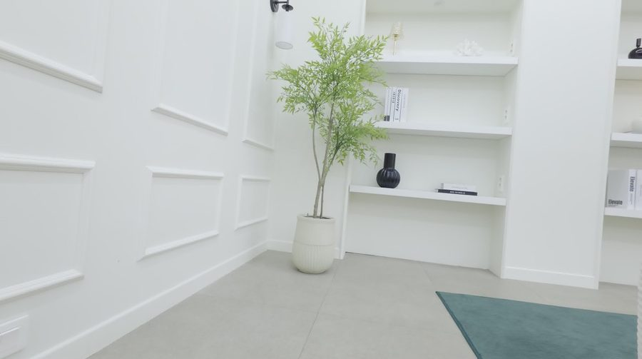
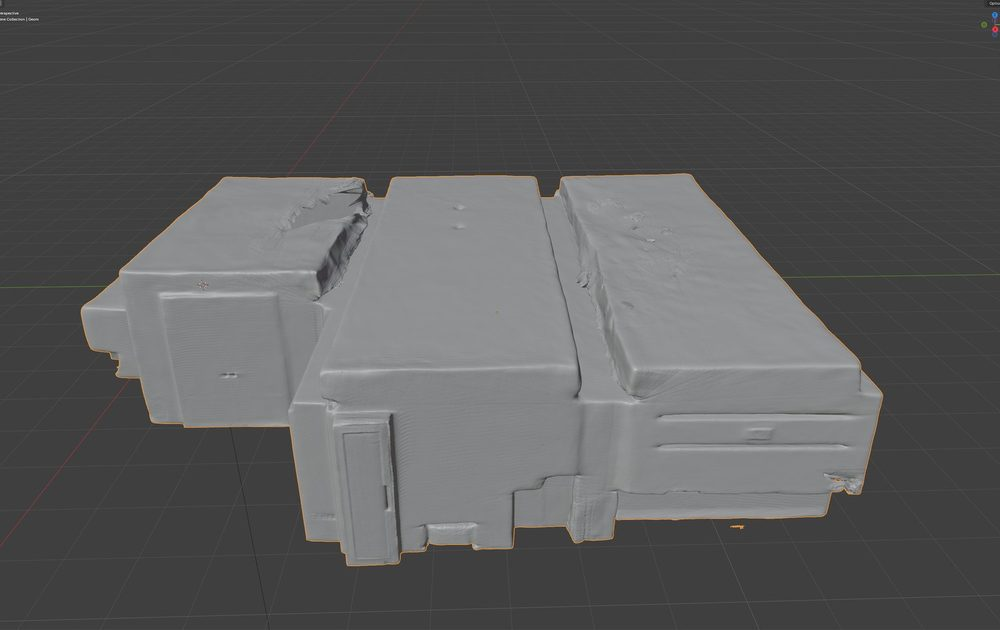
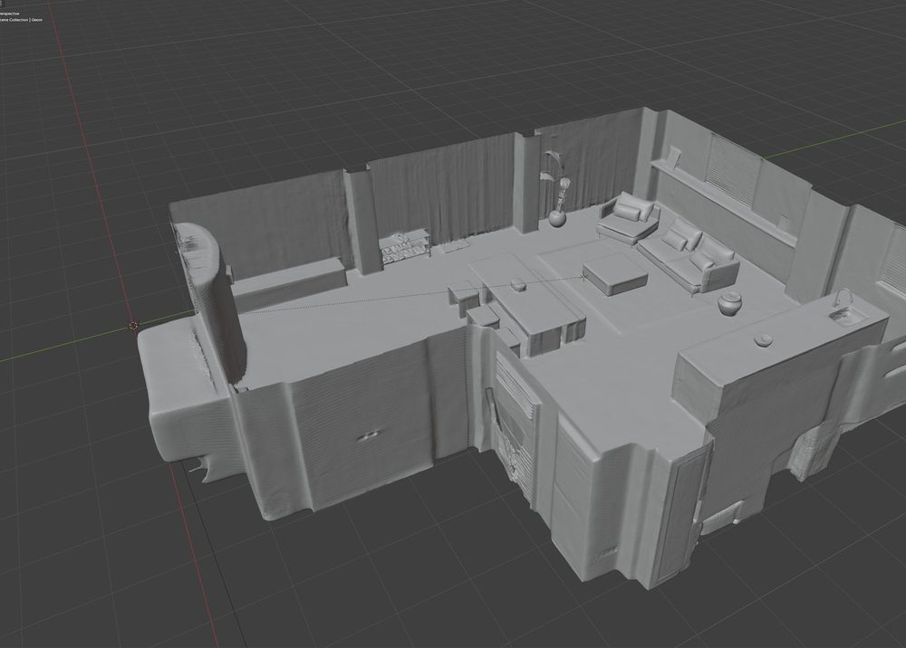
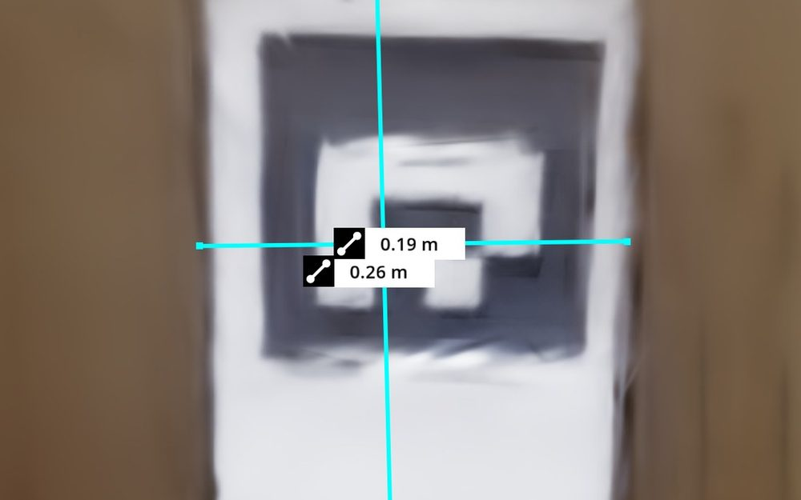
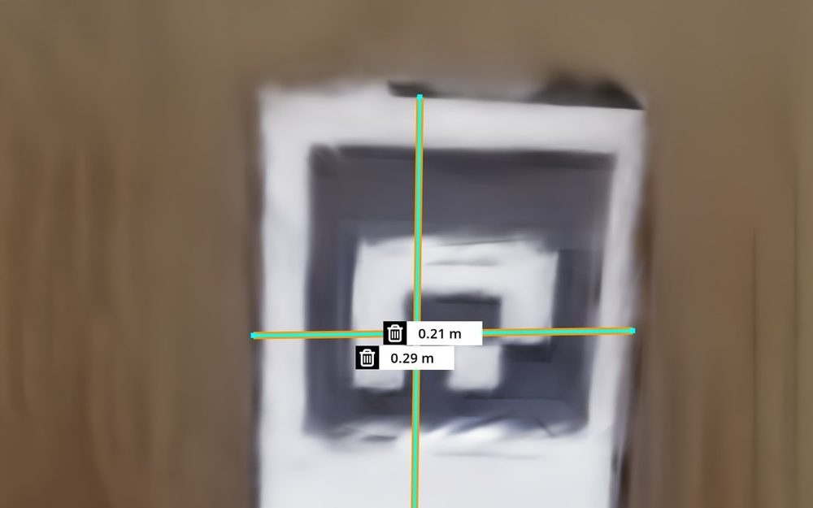
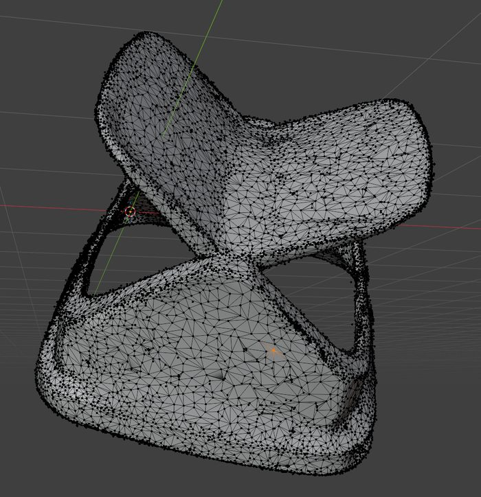
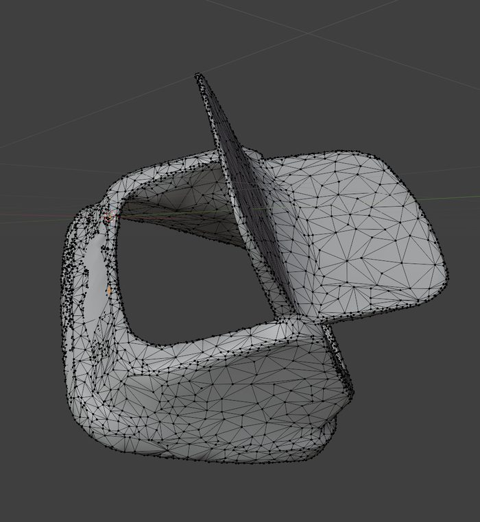

Overview
실제 공간과 물체를
실제 공간과 물체를
시뮬레이션 자산으로
현장에서 촬영해 3D로 복원한 자료를 가공해, 시뮬레이터에서 크기와 표시, 동작을 확인한 뒤 다른 사람이 다시 열 수 있는 자산으로 전달했습니다.
Python · Blender · USD · Open3D · Isaac Sim
담당 범위는 장면·자산 가공과 검증이며, 로봇 제어나 정책 학습 개발과는 구분됩니다.
01
재구성 자료
복원 결과와 원본 자료를 그대로 보존
02
형상 가공
노이즈와 구멍을 정리하고, 형상을 지키며 경량화
03
동작 확인
실측 스케일, 물리, 관절을 설정하고 시뮬레이터에서 확인
04
결과 전달
참조 파일과 작업 기록을 포함해 패키징
Problem
복원 결과를
복원 결과를
그대로는 쓸 수 없다
3D 복원 결과는 보기에는 그럴듯해도, 시뮬레이터에서 로봇이 쓰려면 형상, 크기, 물리 속성, 파일 구성이 모두 맞아야 합니다.
노이즈와 구멍, 천장이 내부 활용을 가린다
복원된 크기가 실제 공간과 다르다
물리와 관절이 없으면 로봇이 상호작용할 수 없다
참조 파일이 빠지면 다른 환경에서 열리지 않는다
Input Preparation
재구성에 넣을 프레임을
재구성에 넣을 프레임을
선명도로 고르는 실험
고속 촬영 영상은 같은 1초 안에서도 흔들린 프레임과 선명한 프레임이 섞여 있습니다. 일정 간격으로 뽑는 대신 구간마다 가장 선명한 프레임을 고르는 방법을 실험했습니다.
- 확인: 균일, 무작위 추출보다 입력 프레임의 선명도와 특징점 수가 높았음


Scene Processing
형상을 정리하고
형상을 정리하고
실측으로 확인한다
- 형상 정리: 노이즈와 구멍을 보정하고 천장을 분리해 내부를 쓸 수 있게 함. 형상 보존을 고려해 경량화
- 참조 유지: 편집한 메쉬는 원본 가우시안 자료의 참조를 유지한 채 이식
- 실측 보정: 장면 안의 A4 용지를 실측 기준으로 삼아 크기를 보정하고, 좌표상 수치가 실제 크기와 맞는지 점검
- 표시 일치: 확인용 물체의 그림자를 장면과 비교해 광원 각도를 맞추고, 천장 표시와 그림자를 받는 면, 필요한 참조 파일을 확인




Physics & Joints
움직이는 부품은
움직이는 부품은
연결과 접촉까지 확인한다
- 부품 가공: 물리와 관절 설정에 쓸 부품의 형상을 수정하고 메쉬를 간소화
- 연결 구성: 고정할 부분은 Fixed Joint, 회전할 부분은 Revolute Joint로 연결
- 구동 확인: Rigid Body, Collider, Angular Drive를 설정하고 회전축, 위치, 닫힌 초기 자세를 확인
- 충돌 조사: 물체가 관통하거나 입구에서 막히는 원인을 조사하고, 부품별로 convex decomposition과 SDF를 나눠 적용
수정 내용, 확인 결과, 남은 문제를 기록해 후속 담당자와 조정했습니다.


Tools & Handoff
같은 절차로 만들고,
같은 절차로 만들고,
어디서든 다시 열리게
- 변경 보호: 출력이 겹치면 멈추고, 원본을 교체하기 전에 백업. 관절을 망가뜨릴 수 있는 미러나 비정상 스케일은 차단
- 전달 패키지: 진입 USD, 참조 USD, 텍스처, 가우시안 자료와 함께 수정 내용, 확인 결과, 남은 문제를 기록
- 재열기 확인: 저장한 결과를 다시 열어 참조 파일이 모두 있는지, 표시와 동작이 그대로인지 점검
- 변환 도구: 가우시안 자료를 시뮬레이터용 자산 형식으로 바꾸는 CPU 기반 변환 도구 구현
- 작업 가이드: 수집부터 전달까지 단계별 입력, 산출물, 완료 기준을 오퍼레이터 가이드로 정리해 운용
경량화 자산을 로봇 학습 시연에 사용. 데모 데이터 준비와 재현성 점검, 외부 납품용 장면 제작
단계별 Python 도구
rescale.py # 실측 스케일 보정
patch_mesh.py # 편집 메쉬를 USD에 이식
add_physics.py # 물리, 충돌 설정
add_revolute_joint.py # 회전 관절 설정
compose_scene.py # 여러 자산을 장면으로 조합
package_deploy.py # 참조 파일을 포함한 배포용 ZIP